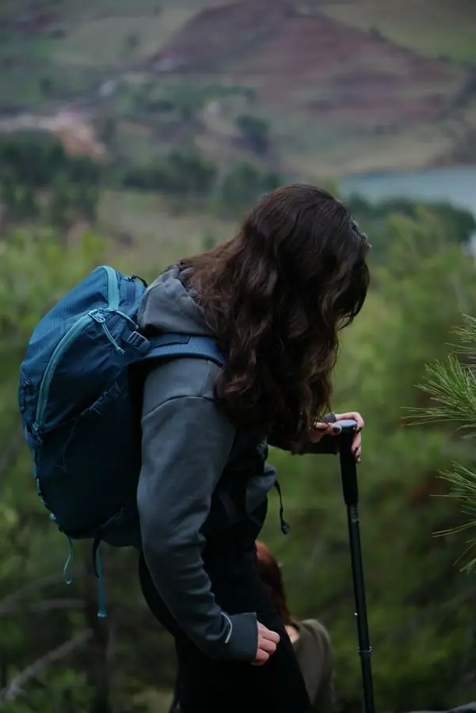
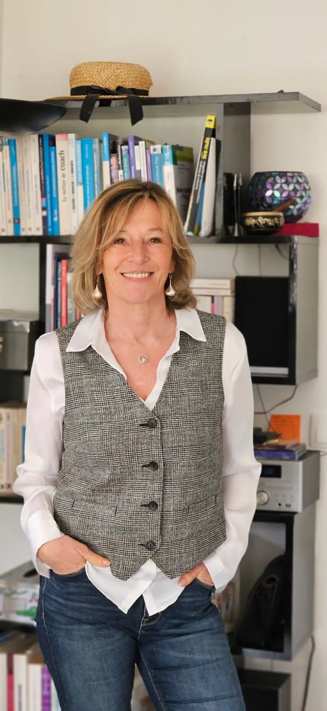

Transformerles passagesen possibles.
Santé mentale et transitions de vieCastillon-du-Gard · à distance · en marchant
Il arrive que les repères vacillent, que les relations se tendent, qu'un changement demande de nouvelles ressources.
La Traverse
Accompagner les passages, ouvrir de nouvelles possibilités.
La Traverse accompagne les personnes, les familles, les professionnels et les organisations dans les périodes de questionnement, de difficulté ou de transition, pour aider chacun à retrouver des repères, mobiliser ses ressources et avancer.
- Des accompagnements
- Des formations
- Des expériences
 Adultes · adolescents · parents · personnes en rétablissement
Accompagnement psychologique et coaching
Traverser une difficulté, mieux comprendre vos relations, retrouver confiance et ressources.
Découvrir
Adultes · adolescents · parents · personnes en rétablissement
Accompagnement psychologique et coaching
Traverser une difficulté, mieux comprendre vos relations, retrouver confiance et ressources.
Découvrir
 Professionnels · équipes · responsables · établissements
Formation et accompagnement des professionnels
Développer les compétences relationnelles, soutenir les équipes et faire évoluer les pratiques.
Découvrir
Professionnels · équipes · responsables · établissements
Formation et accompagnement des professionnels
Développer les compétences relationnelles, soutenir les équipes et faire évoluer les pratiques.
Découvrir
Par où commencer
Vous vous reconnaîtrez peut-être…
- « Je traverse une période de changement »AccompagnementReconversion, mobilité, séparation, nouvelle étape de vie : retrouver un cap.
- « Je me sens dépassé·e »AccompagnementStress, anxiété, charge mentale, manque de temps : retrouver de l'air.
- « La relation avec mon enfant est difficile »ParentsTensions, difficultés éducatives, épuisement parental.

« Mon adolescent doit choisir son orientation »AdolescentsUn parcours en quatre séances pour mieux se connaître et choisir en confiance.- « Je reprends pied après une période difficile »RétablissementAprès une hospitalisation, un burn-out ou un épisode dépressif : retrouver ses appuis.
- « Notre équipe a besoin de se former, de souffler »ProfessionnelsCommunication, coopération, stress, prévention de l'épuisement.
 « Notre équipe a besoin de se retrouver »Journées de cohésionUne journée hors du quotidien pour expérimenter la coopération et la confiance.
« Notre équipe a besoin de se retrouver »Journées de cohésionUne journée hors du quotidien pour expérimenter la coopération et la confiance.- « Je prends soin des autres, et moi ? »Professionnels de santéDes espaces pour souffler, échanger et se préserver.
Avancer ne veut pas forcément dire aller plus vite. Parfois, il s'agit de s'arrêter, de comprendre, de reprendre confiance ou de regarder autrement.

Qui vous accompagne
« Accompagner les passages de vie, sans imposer un chemin tout tracé, mais en aidant chacun à trouver le sien. »
Aline Debecker, psychologue, coach et formatrice.
- 20 ans+d'accompagnement
- Depuis 2011formatrice de professionnels
- 40+thèmes de formation
Mouvement et nature
Parfois, on pense mieux en marchant.
Le corps, la nature et le collectif sont des ressources. Certains accompagnements peuvent se dérouler en marchant, lorsque c'est adapté à votre demande.
Le premier pas